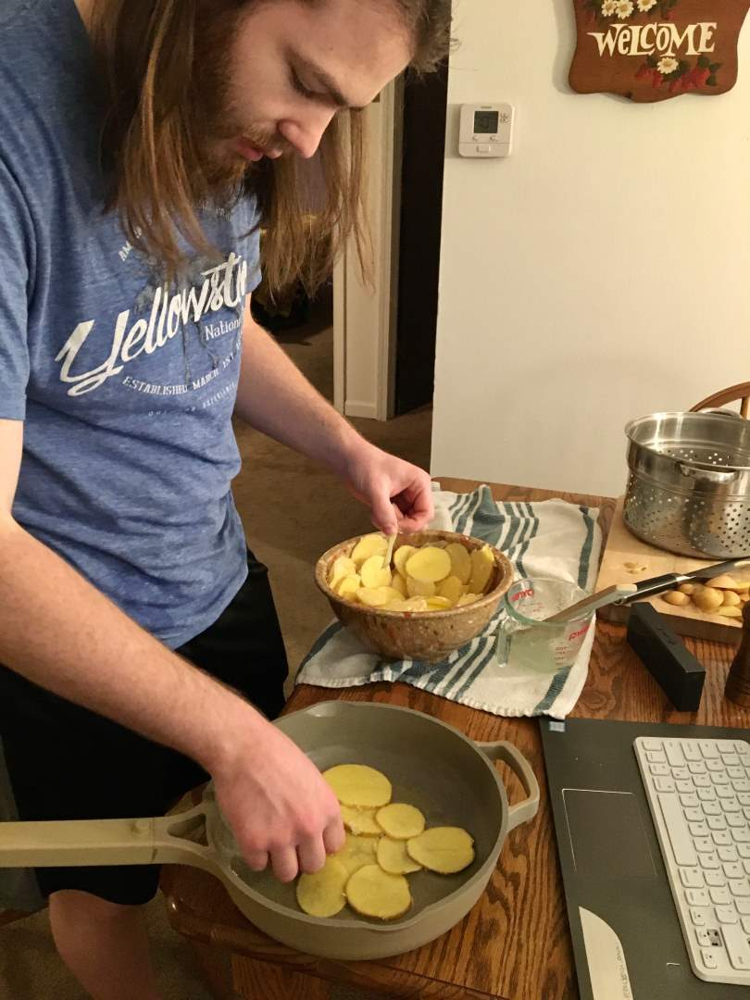
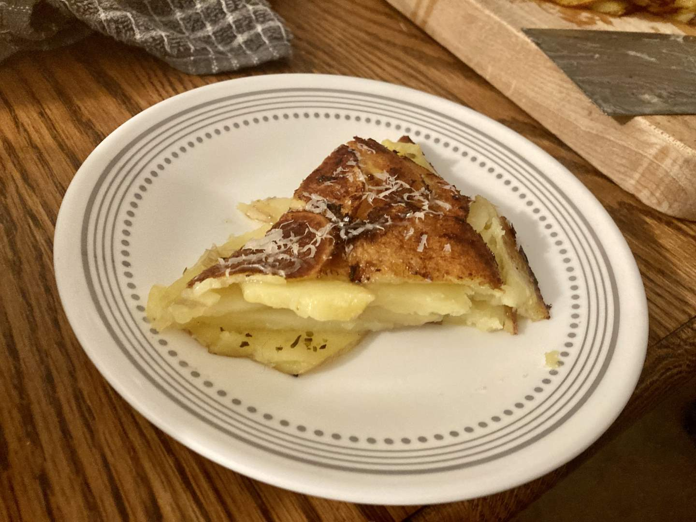

Pie 28: Potato Slice
2024-01-06Recipe is from Cast Iron & Wine..
Taste:
Difficulty:
Vibes:
Suggested pairings: butternut squash soup
The first pie of 2024 and it doesn’t even have a pastry crust? Have Ben and Katie Beth gone soft and abandoned pie orthodoxy? Nothing could be further from the truth! We are instead dedicating ourselves to an increased number of savory pies over the next few months at least. Only three of the twenty-seven pies we baked in 2023 were savory! To bake a large variety of non-sweet pies we must move beyond the realm of meat pies and explore other options, including vegetables.
On Saturday the 6th some friends were coming over for dinner and I (Ben) wanted a side dish for Katie Beth’s butternut squash soup that would use an ingredient we already possessed. That turned out to be half a bag of Yukon gold potatoes. Following a recipe from some random amateur food blog, I sliced them thin, mixed them with melted butter and cornstarch, and added some mild seasonings. Finally, I layered the slices into a pan that I thought was oven-safe. (I even looked at the company website!)
I cooked the dish on the stovetop to crisp up the bottom (this makes it a real pie according to the definition espoused in our fourth pie post!) before layering on a piece of oiled aluminum foil and a pie dish full of rice. This was supposed to smoosh the layers of potato down so they would stick together. Then I baked the entire assemblage for about 40 minutes. Upon removing the pan, I was shocked to realize that the pan was not truly oven-safe, evidenced by a suspicious color change in the handle! (Turns out the company has fixed this with version 2.0, which is being sold on their website currently.)
I flipped the potatoes out onto a cutting board in the manner of a pineapple upside-down cake. Because we didn’t wait for it to cool before slicing and eating, the layers did not stick together quite as well as I had hoped. I had thrown together a spicy fry sauce which I normally make for french fries. Katie Beth thought the potato slice pie alone was very bland with a flavor of 2/8 slices, but said it was about a 4/8 with the sauce. I would say it’s a little better than that, but not much. If I ever make this again I will add lots more spices to the potatoes before cooking.
